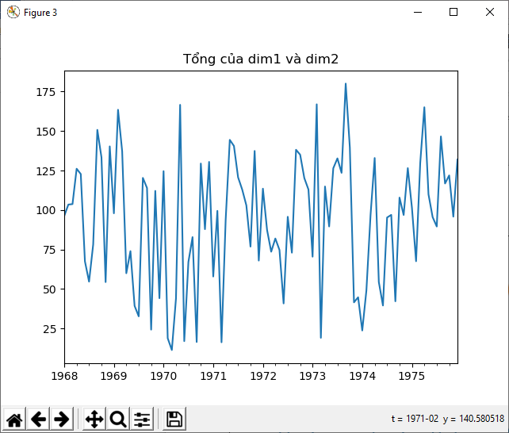
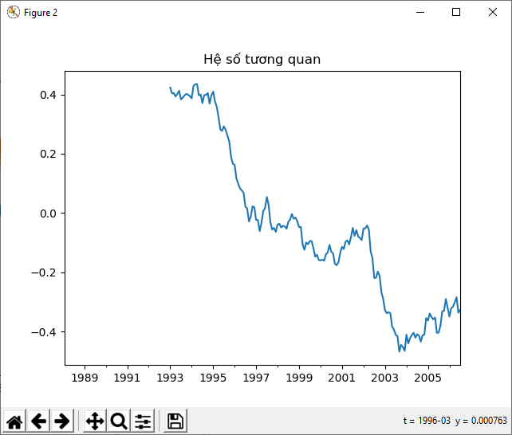

C11: Sequential Data
11
Lý luận xác suất cho dữ liệu liên tục
Trong chương này chúng ta sẽ học về cách xây dựng một mô hình học liên tục. Chúng ta sẽ học cách xử lý dữ liệu chuỗi trong Pandas. Chúng ta sẽ biết được cách chia dữ liệu chuỗi và biểu diễn hoạt động của nó. Chúng ta sẽ thảo luận về cách tách những số liệu thống kê khác nhau từ một dữ liệu chuỗi. Chúng ta sẽ học về mô hình Hidden Markov và áp dụng nó vào một hệ thống để xây dựng các mô hình. Chúng ta sẽ hiểu cach sử dụng Conditional Random Fields để phân tích trình tự của bảng chữ cái. Chúng ta sẽ thảo luận cách phấn tích dữ liệu chứng khoán sử dụng những kỹ thuật sẽ học:
- Quản lý dữ liệu chuỗi với Pandas
- Chia dữ liệu chuỗi
- Các phép tính trên dữ liệu chuỗi
- Phân tách số liệu thống kê từ dữ liệu chuỗi
- Tạo dữ liệu sử dụng Hidden Markov Models
- Xác định trình tự bảng chữ cái cùng với Conditional Random Fields
- Phân tích thị trường chứng khoán
Hiểu về dữ liệu tuần tự (Squential data)
Trong thế giới của ML (máy học – Machine Learning), chúng ta gặp rất nhiều dạng dữ liệu khác nhau như hình ảnh,văn bản, video, … Những dạng dữ liệu này cần những dạng lập mô hình khác nhau. Dữ liệu tuần tự ( sequential data) là dữ liệu trong đó việc quan trọng nhất là được xắp xếp một cách tuần tự (sequential). Dữ liệu chuỗi (time-series data) là một biểu hiện cụ thể của dữ liệu tuần tự.
Về cơ bản những giá trị được đánh dấu thời gian(time-stamped) được lấy từ những dữ liệu nguồn như: cảm biến, mic, biến động thị trường,… Những dữ liệu chuỗi (time-series) có rất nhiều nét đặc trưng quan trong cần được mô hình hóa theo thứ tự để phân tích dữ liệu hiệu quả hơn.
Các phép đo chúng ta thường gặp trong dữ liệu chuỗi là: thực hiện trong khoảng thời gian cố định và tương ứng với các thông số được xác định trước. Những phép đo này được xắp xếp trên một khoảng thời gian để lưu trữ, và thứ tự của chúng xuất hiện là rất quan trong. Chúng ta sử dụng những thứ tự này để phân tách chúng từ dữ liệu.
Trong chương này chúng ta sẽ học cách xây dựng mô hình mô tả dữ liệu chuỗi hoặc trình tự của chúng nói chung. Những mô hình này sử dụng để hiểu các trạng thái của một biến qua thời gian. Sau đó chúng ta sẽ dùng những mô hình này để dự đoán tương lai dựa trên những những trạng thái cũ.
Phân tích chuỗi dữ liệu được dùng một cách chuyên sâu trong phan tích kinh tế, phân tích dữ liệu cảm biến, nhận diện giọng nói, kinh tế, thời tiết, chế tạo,… Chúng ta sẽ khám phá nhiều tình huống khá nhau khi chúng ta phải đối mặt với việc phân tích dữ liệu chuỗi và xem cách nào để chúng ta xây dựng một bộ giải pháp. Chúng ta sẽ sử dụng một bộ thư viện gọi là Pandas để quản lý tất cả những hoạt động liên quan đến dữ liệu chuỗi. Chúng ta cũng sẽ sử dụng thêm 3 thư viện là hmmlearn và pystruct, cvxopt trong chương này.
$pip3 install pandas
$pip3 install hmmlearn
$pip3 install pystruct
$pip3 install cvxopt
Xử lý dữ liệu chuỗi với Pandas
Hãy bắt đầu bằng cách xử lý dữ liệu chuỗi bằng Pandas. Trong phần này chúng ta sẽ chuyển dổi một chuỗi số vào trong chuỗi thời gian và biểu diễn nó thành đồ thị. Pandas cho ta một lựa chọn để thêm đánh dấu thời gian,tổ chức dữ liệu, và vận hành hiệu quả trên nó:
import numpy as np
import matplotlib.pyplot as plt
import pandas as pd
# Tạo hàm để đọc dữ liệu nhập. Tham số index là số cột bên trong dữ liệu
def read_data(input_file,index):
input_data=np.loadtxt(input_file,delimiter=',')
#Tạo một hàm lambda để chuyển đổi từ string thành format ngày tháng trong Pandas:
to_date=lambda x,y:str(int(x))+'-'+str(int(y))
# Sử dụng lambda để lấy ngày bắt đầu từ dòng đầu tiên trong file input
start=to_date(input_data[0,0],input_data[0,1])
# Thư viện Pandas cần ngày kết thúc để chọn lọc khi chúng ta thực hiện các phép tính, vì thế chúng ta cần tăng ngày cuối ở dòng cuối cùng bằng một tháng:
if input_data[-1,1]==12:
year=input_data[-1,0]+1
month=1
else:
year=input_data[-1,0]
month=input_data[-1,1]+1
end=to_date(year,month)
#Tạo một list các vị trí cùng với ngày tháng dùng ngày bắt đầu và kết thúc và lặp lại trong một tháng:
date_indices=pd.date_range(start,end,freq='M')
#Tạo chuỗi dữ liệu liên tục dùng timestamps
output=pd.Series(input_data[:,index],index=date_indices)
return output
#Tạo ham main để bắt đầu
if __name__=="__main__":
input_file='data/chap11/data_2D.txt'
# Chỉ định số cột có trong dữ liệu
indices=[2,3]
#Tạo vòng lặp tất cả các cột và đọc dữ liệu ở mỗi cột
for index in indices:
timeseries=read_data(input_file,index)
#Biểu diễn dữ liệu
plt.figure()
timeseries.plot()
plt.title("Chiều "+str(index-1))
plt.show()
Kết quả in ra sẽ gồm 2 bảng ( vì chúng ta sử dụng 2 cột)
Bảng thứ 1 là chiều dữ liệu 1 và bảng thứ 2 là chiều dữ liệu thứ 2
Chia chuỗi dữ liệu
Bây giờ chúng ta đã biết cách xử lý chuỗi dữ liệu, giờ thì phải tách nó ra. Quá trình tách này là quá trình chia dữ liệu khác nhau thành các phần nhỏ khác nhau và phân tích các thông tin liên quan đến nhau. Nó rất hữu dụng khi chúng ta làm việc với bộ dữ liệu chuỗi. Thay vì sử dụng trích xuất mục lục (indeces) chúng ta sẽ dùng timestamp để chia dữ liệu của chúng ta.
import matplotlib.pyplot as plt
# Sử dụng code của bài trước
from timeseries_pandas import read_data
# Load dữ liệu ở cột thứ 3 trong bộ tài liệu 2d
index=2
data=read_data('data/chap11/data_2D.txt',index)
# Tạo năm bắt đầu và kết thúc, sau đó vẽ dữ liệu trong vùng này
start='2003'
end='2011'
plt.figure()
data[start:end].plot()
plt.title("Dữ liệu từ năm "+start+" tới năm "+end)
# Tạo tháng bắt đầu và tháng kết thúc, vẽ dự liệu trong vùng tháng:
start='1988-2'
end='2006-7'
plt.figure()
data[start:end].plot()
plt.title("Dữ liệu từ tháng "+start[-1]+" năm "+start[:-2]+" tới tháng "+end[-1]+" năm "+end[:-2])
plt.show()
Kết quả

Tính toán trên dữ liệu chuỗi
Pandas cho phép chúng ta thực hiên các phép toán trên dữ liệu chuỗi và thực hành các phép tính khác như lọc (filtering) và cộng (addition). Bạn có thể đặt vài điều kiện Panda sẽ lọc dữ liệu và trả lại tập con chính xác. Bạn có thể cộng (add) 2 chuỗi biến. Đây là cách mà chúng ta sẽ xây dựng những ứng dụng nhanh hơn mà không phải lặp lại quá trình thực hiện.
import matplotlib.pyplot as plt
import pandas as pd
# Sử dụng code bài trước
from timeseries_pandas import read_data
input_file="data/chap11/data_2D.txt"
# Load cột 3 và 4 thành 2 biến khác nhau
x1=read_data(input_file,2)
x2=read_data(input_file,3)
# Tạo 2 khung dữ liệu bằng cách đặt tên cho 2 chiều
data=pd.DataFrame({'dim1':x1,'dim2':x2})
# Vẽ dữ liệu bằng cách chỉ định năm bắt đầu và kết thúc:
start='1968'
end='1975'
data[start:end].plot()
plt.title('Dữ liệu ban đầu')
# Lọc dữ liệu sử dụng điều kiện và vẽ nó ra. Trong trường hợp này chúng ta sẽ lấy dữ liệu ở tất cả các điểm dữ liệu dim1 và nó phải nhỏ hơn 45 và giá trị tại dim2 phải lớn hơn 30:
mdata=data[(data['dim1']<45)&(data['dim2']>30)]
mdata[start:end].plot()
plt.title("dim1<45 & dim2 > 30")
# Chúng ta cũng có thể + 2 series trong Pandas. Hãy thử dim1+dim2 bằng ngày bắt đầu và kết thúc:
plt.figure()
diff=data[start:end]['dim1']+data[start:end]['dim2']
diff.plot()
plt.title("Tổng của dim1 và dim2")
plt.show()

Trích xuất số liệu thống kê từ dữ liệu chuỗi
Để trích xuất những phần có ý nghĩa từ chuỗi dữ liệu, chúng ta phải trích xuất các thống kê từ nó. Những số liệu thống kê này có thể là những thứ như các số trung bình (mean), phương sai (variance), số tương quan (correlation), giá trị max … Những số liệu thống kê phải được tính toán trên một cuộn cơ bản sử dụng một window. Chúng ta sử dụng một window được xác định trước về cỡ và giữ những tính toán những thống kê bên trong đó. Khi chúng ta biểu diễn những thống kê theo thời gian, chúng ta sẽ nhìn thấy những phần thông tin riêng biệt. Giờ thì hãy xem các pandas tách những thống kê từ dữ liệu chuỗi theo thời gian:
import numpy as np
import matplotlib.pyplot as plt
import pandas as pd
from timeseries_pandas import read_data
# Load cột 3 và cột 4 từ dữ liệu thành 2 biến
x1=read_data('../data/chap11/data_2D.txt',2)
x2=read_data("../data/chap11/data_2D.txt",3)
#Tạo dataframe và đặt tên để tạo dữ liệu 2 chiều dim1,dim2
data=pd.DataFrame({'dim1':x1,'dim2':x2})
# Tách lấy giá trị lớn nhất và nhỏ nhất ở mỗi chiều
print("Giá trị lớn nhất ở mỗi chiều")
print(data.max())
print("Giá trị nhỏ nhất ở mỗi chiều")
print(data.min())
# Tách lấy giá trị trung bình của từng chiều và giá trị trung bình ở 12 hàng đầu tiên
print("Giá trị trung bình của từng chiều")
print(data.mean())
print("Giá trị trung bình giữa 2 chiều theo thời gian")
print(data.mean(1)[:12])
# Vẽ biểu đồ sử dụng cỡ window là 24:
start='1988-2'
end='2006-7'
data[start:end].rolling(center=False,window=24).mean().plot()
plt.title("Giá trị trung bình")
#plt.show()
# Các hệ số tương quan
print("Hệ số tương quan\n",data.corr())
# Vẽ biểu đồ sử dụng window size = 60
plt.figure()
plt.title('Hệ số tương quan')
data[start:end]['dim1'].rolling(window=60).corr(other=data[start:end]['dim2']).plot()
plt.show()

Giá trị lớn nhất ở mỗi chiều
dim1 99.98
dim2 99.97
dtype: float64
Giá trị nhỏ nhất ở mỗi chiều
dim1 0.18
dim2 0.16
dtype: float64
Giá trị trung bình của từng chiều
dim1 49.030541
dim2 50.983291
dtype: float64
Giá trị trung bình giữa 2 chiều theo thời gian
1900-01-31 85.595
1900-02-28 75.310
1900-03-31 27.700
1900-04-30 44.675
1900-05-31 31.295
1900-06-30 44.160
1900-07-31 67.415
1900-08-31 56.160
1900-09-30 51.495
1900-10-31 61.260
1900-11-30 30.925
1900-12-31 30.785
Freq: M, dtype: float64
Hệ số tương quan
dim1 dim2
dim1 1.00000 0.00627
dim2 0.00627 1.00000
Tạo dữ liệu sử dụng mô hình Hidden Markov.
Mô hình Hidden Markov(HMM) là một kỹ thuật phân tích mạnh mẽ trong việc phân tích dữ liệu liên tục nối tiếp (chuỗi dữ liệu). Nó giả định rằng hệ thống đã được mô hình là một quá trình xử lý Markov cùng với những trạng thái ẩn. Nó có nghĩa là những hệ thống cơ bản có thể là một trong số những trạng thái đó. Nó duyệt qua tất cả các trạng thái kế tiếp nhau và tạo ra những chuỗi output. Chúng ta có thể chỉ cần quan sát kết quả đầu ra chứ không cần quan tâm đến các trạng thái của chuỗi. Vì thế những trạng thái đó là ẩn (Hidden) đối với chúng ta. Mục đích của chúng ta là mô hình dữ liệu để chúng ta có thể suy luận ra sự biến đổi trạng thái của những dữ liệu không biết.
Để hiểu về HMM hãy xem ví dụ một người bán hàng có thể di chuyển ở 3 thành phố để làm công việc của anh ấy: London, Barcelona, New York. NHiệm vụ của anh ấy cần làm là di chuyển trong thời gian ngắn nhất để có hiệu quả nhất trong công việc. Xem xét công việc của anh ấy và lịch trình làm việc, chúng ta có một bộ xác xuất quyết định để đi từ thành phố X-> thành phố Y. Như thông tin được đưa ra ở bên dưới, P(X,Y) là thời gian tạm tính để đi từ X->Y.
P(London -> London) = 0.10
P(London -> Barcelona) = 0.70
P(London -> NY) = 0.20
P(Barcelona -> Barcelona) = 0.15
P(Barcelona -> London) = 0.75
P(Barcelona -> NY) = 0.10
P(NY -> NY) = 0.05
P(NY -> London) = 0.60
P(NY -> Barcelona) = 0.35
Hãy thử biểu diễn những thông tin này bằng ma trận chuyển tiếp:
London Barcelona NY
London 0.10 0.70 0.20
Barcelona 0.75 0.15 0.10
NY 0.60 0.35 0.05
GIờ chúng ta có tất cả các thông tin, giờ thì tiếp tục tạo báo cáo vấn đề. Người bán hàng này bắt đầu chuyến đi vào thử Ba từ London và anh ấy có một kế hoạch riêng vào thứ Sáu. Nhưng nó sẽ dựa trên ván đề là anh ấy ở đâu. Xác xuất anh ấy sẽ ở Barcelona vào thứ Sáu là bao nhiêu ? Bảng sau sẽ giúp chúng ta đoán đc điều đó.
Nếu chúng ta không có Chuooixx Markov (Markov Chain) để mô hình vấn đề này thì chúng ta sẽ không biết lịch trình di chuyển của anh ấy thế nào. Nhiệm vụ của chúng ta là có thể nói anh ấy có khả năng ở thành phố nào trong một thời gian nhất định. Nếu chúng ta biểu thị ma trận chuyển tiếp bằng thời gian T và ngày hiện tại bởi hàm X(i) thì ta có
X(i+1)= X(i).T
Trong trường hợp chúng ta đặt ra, ngày thứ Sáu là ngày sau ngày bắt đầu (thứ Ba) 3 này. Nó có nghĩa là chúng ta phải tính X(i+3).
Phép tính nhìn giống như sau:
- X(i+1)=X(i).T
- X(i+2)=X(i+1).T
- X(i+3)=X(i+2).T => về bản chất nó là X(i+3)=X(i)T^3
- chúng ta cầ đặt X(i) được cho ở đây X(i)=[0.10 0.70 0.20]
Bước tiếp theo là chúng ta tính khối lập phương ma trận T^3. Có rất nhiều tools để có thể tính online cái này vd : http://matrix.reshish.com/multiplication.php. Sauk hi bạn đã tính toán xong bạn sẽ nhìn thấy kết quả là thứ Năm:
P(London)=0.31
P(Barcelona)=0.53
P(NY)=0.16
Như bạn có thể thấy bên trên cơ hội anh ấy có mặt ở Barce là cao nhất (0.53). Điều này cũng có nghĩa về mặt địa lý thì Barce gần London hơn NY.
đến phần dùng code
import datetime
import numpy as np
import matplotlib.pyplot as plt
from hmmlearn.hmm import GaussianHMM
#Load Data từ file txt
data=np.loadtxt('../data/chap11/data_1D.txt',delimiter=',')
# Lấy dữ liệu cột thứ 3 để training
X=np.column_stack([data[:,2]])
# Tạo mô hình phân loại HMM với số components=5 và sử dụng hiệp phương sai theo đường chéo
hmm=GaussianHMM(n_components=5,covariance_type='diag',n_iter=1000)
#Train HMM
hmm.fit(X)
# In khoảng cách mean và phương sai (variance) cho mỗi component của mô hình HMM:
print('Means and Variances:')
for i in range(hmm.n_components):
print('\nHidden State',i+1)
print('Mean=',round(hmm.means_[i][0],2))
print('Variance=',round(np.diag(hmm.covars_[i])[0],2))
#Tạo bộ samples 1200 điểm dữ liệu sử dụng mô hình HMM đã tạo và vẽ nó lên đồ thị
num_samples=1200
generated_data, _=hmm.sample(num_samples)
plt.plot(np.arange(num_samples),generated_data[:,0],c='black')
plt.title('Dữ liệu đã tạo')
plt.show()
Kết quả thu được:
Terminal:
Means and Variances:
Hidden State 1
Mean= 8.6
Variance= 0.26
Hidden State 2
Mean= 2.6
Variance= 0.26
Hidden State 3
Mean= 4.6
Variance= 0.25
Hidden State 4
Mean= 0.6
Variance= 0.25
Hidden State 5
Mean= 6.59
Variance= 0.25
Nhận diện trình tự bảng chữ cái cùng với Conditional Random Fields
Conditional Random Fields( CRFs) là mô hình xác xuất thường được sử dụng để phân tích cấu trúc dữ liệu. Chúng ta sử dụng chúng để dán nhãn và phân loại dữ liệu tuần tự ( hoặc liên tục) theo nhiều cách khác nhau. Một thứ chúng ta càn chú ý về CRFs chúng là mô hình phân biệt . Nó tương phản với mô hình Hidden Markov đã nói ở trên, ns sẽ tạo ra những mô hình.
Chúng ta có thể định nghĩa một xác xuất có điều kiện trên một chuỗi có dán nhãn. Chúng ta dùng framework này để xây dựng một mô hình CRF. trong mô hình HMM chúng ta phải tạo điểm phân phối chung trên các chuỗi và các nhãn.
Một trong những lợi thế của CRF là chúng có điều kiện. Đây không phải là trường hợp sử dụng cùng với HMM. CRFs không giả định bất cứ sự độc lập nào với kết quả đầu ra còn HMM cho rằng đầu ra tại bất kỳ thời điểm nào đều độc lập với kết quả trước đó. HMM cần giả định này để đảm bảo rằng quá trình suy luận hoạt đông theo một cách nào đó. Nhưng giả định này thì không phải lúc nào cũng đúng. trong thực tế dữ liệu được điền phụ thuộc vào thời gian.
CRFs có xu hướng tốt hơn HMMs ở trong một số ứng dụng như xử lý ngôn ngữ, đoán chữ từ âm thành, công nghệ sinh học … Trong phần này chúng ta sẽ thảo luận về vấn đế sử dụng CRFs để phân tích trình tự của bảng chữ cái.
Hiện tại không cài được lib Pystruct nên bỏ qua phần này :D
Dưới đây là code theo cuốn sách
import os
import argparse
import string
import pickle
import numpy as np
import matplotlib.pyplot as plt
from pystruct.datasets import load_letters
from pystruct.models import ChainCRF
from pystruct.learners import FrankWolfeSSVM
def build_arg_parser():
parser = argparse.ArgumentParser(description='Trains a Conditional\
Random Field classifier')
parser.add_argument("--C", dest="c_val", required=False, type=float,
default=1.0, help='C value to be used for training')
return parser
# Class to model the CRF
class CRFModel(object):
def __init__(self, c_val=1.0):
self.clf = FrankWolfeSSVM(model=ChainCRF(),
C=c_val, max_iter=50)
# Load the training data
def load_data(self):
alphabets = load_letters()
X = np.array(alphabets['data'])
y = np.array(alphabets['labels'])
folds = alphabets['folds']
return X, y, folds
# Train the CRF
def train(self, X_train, y_train):
self.clf.fit(X_train, y_train)
# Evaluate the accuracy of the CRF
def evaluate(self, X_test, y_test):
return self.clf.score(X_test, y_test)
# Run the CRF on unknown data
def classify(self, input_data):
return self.clf.predict(input_data)[0]
# Convert indices to alphabets
def convert_to_letters(indices):
# Create a numpy array of all alphabets
alphabets = np.array(list(string.ascii_lowercase))
# Extract the letters based on input indices
output = np.take(alphabets, indices)
output = ''.join(output)
return output
if __name__=='__main__':
args = build_arg_parser().parse_args()
c_val = args.c_val
# Create the CRF model
crf = CRFModel(c_val)
# Load the train and test data
X, y, folds = crf.load_data()
X_train, X_test = X[folds == 1], X[folds != 1]
y_train, y_test = y[folds == 1], y[folds != 1]
# Train the CRF model
print('\nTraining the CRF model...')
crf.train(X_train, y_train)
# Evaluate the accuracy
score = crf.evaluate(X_test, y_test)
print('\nAccuracy score =', str(round(score*100, 2)) + '%')
indices = range(3000, len(y_test), 200)
for index in indices:
print("\nOriginal =", convert_to_letters(y_test[index]))
predicted = crf.classify([X_test[index]])
print("Predicted =", convert_to_letters(predicted))
Phân tích thị trường chứng khoán (stock market)
Chúng ta sẽ phân tích dữ liệu thị trường chứng khoán trong phần này sử dụng mô hình Hidden Markov. Đây là một ví dụ mà trong đó dữ liệu đã được xắp xếp và đánh dấu thời gian. Chúng ta sẽ sử dụng cơ sở dữ liệu có sẵn trong thư viện matplotlib. Dữ liệu này chứa giá trị một vài cổ phiếu của một số công ty khác nhau qua nhiều năm. Mô hình Hidden Markov sẽ tạo ra những mô hình có thể phân tích dữ liệu chuỗi và phân tích những cấu trúc cơ bản. Chúng ta sẽ sử dụng mô hình này để phân tích sự biến đổi giá cổ phiểu và tạo kết quả đầu ra.
Mình không tìm hiểu về stock market nên không hiểu lắm. bỏ qua
Vì matplotlib đã deprecated nên sử dụng panda để load từ file csv
Lấy file csv từ đây https://github.com/matplotlib/mpl_finance
Tổng kết
Trong chương này chúng ta đã học cách để xây dựng mô hình học tập theo trình tự. Học về cách quản lý chuỗi dữ liệu theo thời gian bằng Pandas. Chúng ta đã thảo luận về cách chia chuỗi dự liệu theo thời gian và thực hiện các hoạt động trên đó vân vân và mây mây.
Trong chương tiếp theo chúng ta sẽ học về cách nhận dạng giọng nói và xây dựng một hệ thống tự động nhận dạng giọng nói